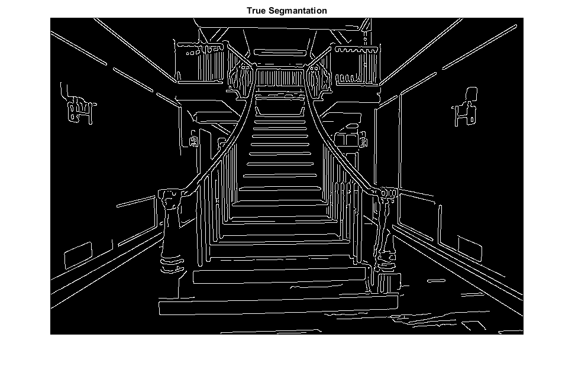

Contents
type Filtre_Canny.m;
type Calculer_Precision.m;
type ObtenirLUT.m
type Segmenter_Couleur.m
function [ image ] = Filtre_Canny( image, masque, seuil )
tb = 0.4;
% lissage gaussien (reduction du bruit)
image_filtre = imfilter(image, masque);
% calcul du gradient (intensite des contours)
[gmag, gdir] = imgradient(image_filtre);
% recherche max locaux
maxN = size(image,1);
maxM = size(image,2);
for n = 1:maxN
for m = 1:maxM
pixel1 = 0;
pixel2 = 0;
pixel = gmag(n,m);
dir = abs(gdir(n,m));
% horizontal
if(dir > 67.5 && dir <= 112.5)
if(n > 1)
pixel1 = gmag(n-1, m);
end
if(n < maxN)
pixel2 = gmag(n+1, m);
end
end
% vertical
if(dir <= 22.5 || dir > 157.5)
if(m > 1)
pixel1 = gmag(n, m-1);
end
if(m < maxM)
pixel2 = gmag(n, m+1);
end
end
% diago /
if(dir > 112.5 && dir <= 157.5)
if(n > 1 && m > 1)
pixel1 = gmag(n-1, m-1);
end
if(n < maxN && m < maxM)
pixel2 = gmag(n+1, m+1);
end
end
% diago \
if(dir > 22.5 && dir <= 67.5)
if(n > 1 && m < maxM)
pixel1 = gmag(n-1, m+1);
end
if(n < maxN && m > 1)
pixel2 = gmag(n+1, m-1);
end
end
if(pixel > pixel1 && pixel > pixel2)
image(n,m) = pixel;
else
image(n,m) = 0;
end
end
end
maximum_local = image;
image = image > seuil;
% figure;
% imshow(image);
% title('Image Binarise inter');
for n = 1:maxN
for m = 1:maxM
pixel = image(n,m);
if(pixel == 1)
% check horizontale
if(m > 1 && m < maxM)
% pixel de droite
if(image(n, m-1) == 1 && maximum_local(n, m+1) > tb)
image(n,m+1) = 1;
end
%pixel de gauche
if(image(n, m+1) == 1 && maximum_local(n, m-1) > tb)
image(n,m-1) = 1;
end
end
% check verticale
if(n > 1 && n < maxN)
% pixel de droite
if(image(n-1, m) == 1 && maximum_local(n+1, m) > tb)
image(n+1,m) = 1;
end
%pixel de gauche
if(image(n+1, m) == 1 && maximum_local(n-1, m) > tb)
image(n-1,m) = 1;
end
end
end
end
end
end
function [ perfo, tpf, tfn ] = Calculer_Precision( image_seg, image_ref )
contour_detecte = sum(sum(image_seg));
contour_reference = sum(sum(image_ref));
contour_correct = sum(sum(image_seg & image_ref));
faux_pos = contour_detecte - contour_correct;
faux_neg = contour_reference - contour_correct;
denum = (contour_correct + faux_pos + faux_neg);
perfo = contour_correct / denum;
tpf = faux_pos / denum;
tfn = faux_neg / denum;
end
function [ table_conversion ] = ObtenirLUT( nb_segments )
%% Discretisation du cube RGB
segment_size = ceil(256 / nb_segments);
table_conversion = uint8(zeros(256,1));
for i = 0:255
index = floor(i / segment_size);
low = index * segment_size;
high = min((index+1) * segment_size - 1, 255);
table_conversion(i+1) = uint8(floor(( low + high ) / 2));
end
end
function [ output_args ] = Segmenter_Couleur( image_couleur, LUT_r, LUT_g, LUT_b )
output_args(:,:,1) = intlut(image_couleur(:,:,1), LUT_r);
output_args(:,:,2) = intlut(image_couleur(:,:,2), LUT_g);
output_args(:,:,3) = intlut(image_couleur(:,:,3), LUT_b);
end
Exercice 1
imgageVoiture = imread('Formula_Ford.png');
figure;
imshow(imgageVoiture);
title('Image Voiture');
PSF = fspecial('motion', 30, 25);
k = 0;
imageUnblured = deconvwnr(imgageVoiture, PSF, k);
figure;
imshow(imageUnblured);
title('Unblured Voiture');
I = im2double(imgageVoiture);
noise_var = 0.0001;
k = noise_var / var(I(:));
imageUnblured = deconvwnr(imgageVoiture, PSF, k);
figure;
imshow(imageUnblured);
title('Unblured Voiture (better k)');
Exercice 2
imageEscalier = imread('escaliers.jpg');
figure;
imshow(imageEscalier);
title('Image Escalier');
gaussien = fspecial('gaussian', 3, 0.5);
img_bin = Filtre_Canny(imageEscalier, gaussien, 80);
figure;
imshow(img_bin);
title('Image Binarise final');
escalier_truSeg = imread('escaliers_TrueSeg.jpg') > 128;
figure;
imshow(escalier_truSeg);
title('True Segmantation');
[ perfo, tpf, tfn ] = Calculer_Precision(img_bin,escalier_truSeg);
I = imread('escaliers.jpg');
BW = edge(I,'canny');
[H,T,R] = hough(BW,'Theta', -10:.5:10);
P = houghpeaks(H,20,'threshold',ceil(0.3*max(H(:))));
lines = houghlines(BW,T,R,P);
figure, imshow(I), hold on
max_len = 0;
for k = 1:length(lines)
xy = [lines(k).point1; lines(k).point2];
plot(xy(:,1),xy(:,2),'LineWidth',2,'Color','green');
plot(xy(1,1),xy(1,2),'x','LineWidth',2,'Color','yellow');
plot(xy(2,1),xy(2,2),'x','LineWidth',2,'Color','red');
len = norm(lines(k).point1 - lines(k).point2);
if ( len > max_len)
max_len = len;
xy_long = xy;
end
end

Exercice 3 - Segmantation par couleurs
imageChateau = imread('chateau.jpg');
figure;
imshow(imageChateau);
title('Image Chateau');
lutTable = ObtenirLUT(8);
seg_chateau = Segmenter_Couleur(imageChateau, lutTable, lutTable, lutTable);
figure;
imshow(seg_chateau);
title('Chateau Segmenter en 8');
lutTable = ObtenirLUT(2);
seg_chateau = Segmenter_Couleur(imageChateau, lutTable, lutTable, lutTable);
figure;
imshow(seg_chateau);
title('Chateau Segmenter en 2');
Warning: Image is too big to fit on screen; displaying at 67%
Warning: Image is too big to fit on screen; displaying at 67%
Warning: Image is too big to fit on screen; displaying at 67%
Exercice 4 - Toon/Paint Shading
image_albert = imread('Albert-Einstein.jpg');
figure;
imshow(image_albert);
title('Albert Einstein');
seg_albert = Segmenter_Couleur(image_albert, ObtenirLUT(10), ObtenirLUT(8), ObtenirLUT(8));
figure;
imshow(seg_albert);
title('Albert Segmenter en 10(rouge) 8(vert)8(bleu)');
gaussien = fspecial('gaussian', 7, 1);
image_conv = uint8(convn(seg_albert,gaussien, 'same'));
figure;
imshow(image_conv);
title('Albert Avec convolution gaussien');
img_bin_r = Filtre_Canny(image_conv(:,:,1), gaussien, 100);
img_bin_g = Filtre_Canny(image_conv(:,:,2), gaussien, 100);
img_bin_b = Filtre_Canny(image_conv(:,:,3), gaussien, 100);
sum = img_bin_r + img_bin_g + img_bin_b;
moy = logical(sum ./ 3);
inv = ~moy;
figure;
imshow(inv);
title('Filtre Contour');
image_conv = uint8(conv2(inv .* 255,gaussien, 'same'));
figure;
imshow(image_conv);
title('Contour et gaussien');
seg_albert(:,:,1) = uint8(double(seg_albert(:,:,1)) .* double(image_conv)/255);
seg_albert(:,:,2) = uint8(double(seg_albert(:,:,2)) .* double(image_conv)/255);
seg_albert(:,:,3) = uint8(double(seg_albert(:,:,3)) .* double(image_conv)/255);
figure;
imshow(seg_albert);
title('Albert look peinture');